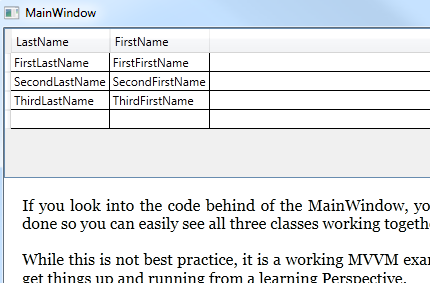

Learning MVVM can be tough, especially when you dig into all the atricles out there. Why not just download a well commentd project that shows everything you need in one single file?
Using VS2010 just download extract build and run! There is a flowdocument that discusses the project and how it was designed built right in to the MainWindow!
Description
The MVVM pattern is tough unless you download and take a look at this, the World's Easiest MVVM Sample. It creates all the classes you need in just one physical file so you can see everything on one page. It has just one XAML window and shows the View first methodology. In addition there is an example of Commanding in the project as well.
There are just 110 lines of code as shown below!
This is what the Mainwindow shows. Lean about Binding, Dynamic content, Commands, View Models, Models, and the View in 15 minutes.

namespace TheWorldsEasiestMVVM
{
/// <summary>
/// Notice the MainWindow has almost nothing in it.
/// </summary>
public partial class MainWindow : Window
{
public MainWindow()
{
InitializeComponent();
}
//NOTE: IT IS OK to change GUI state in the View in code behind of the view!
private void Button_Click(object sender, RoutedEventArgs e)
{
XTBEndOfStory.Visibility = Visibility.Visible;
}
}
/// <summary>
/// The ViewModel is instantiated in the XAML from a static resource declaration.
/// Some developers say don't inherit from Dependency Object, it's done here to get addressability to SetValue!
/// </summary>
public class MainWindowViewModel : DependencyObject
{
/// <summary>
/// The dependency property system is superior to INotifyPropertyChanged interface and is just about as simple to write.
/// </summary>
public static DependencyProperty OCProperty = DependencyProperty.Register("OC", typeof(ObservableCollection<Person>), typeof(MainWindowViewModel));
/// <summary>
/// The ViewModel creates a model and sets the content to be displayed as a collection of type person!
/// </summary>
public MainWindowViewModel()
{
//The view model knows the model.
MainWindowModel mwm = new MainWindowModel();
//Simulates a get data request
OC = mwm;
}
//This is the PATH within this DATACONTEXT. DATACONTEXT = MainWindowViewModel, PATH = OC
//Many of you new to MVVM stumble on DATACONTEXT and PATHs...
public ObservableCollection<Person> OC
{
get { return (ObservableCollection<Person>)GetValue(OCProperty); }
set { SetValue(OCProperty, value); }
}
}
/// <summary>
/// This Model is an ObservableCollection of person, but it could have easily just updated it from a Database somewhere
/// </summary>
public class MainWindowModel : ObservableCollection<Person>
{
public MainWindowModel()
{
this.Add(new Person { LastName = "FirstLastName", FirstName = "FirstFirstName" });
this.Add(new Person { LastName = "SecondLastName", FirstName = "SecondFirstName" });
this.Add(new Person { LastName = "ThirdLastName", FirstName = "ThirdFirstName" });
AddNewPerson.OnNewPerson += new Notify(AddNewPerson_OnNewPerson);
}
//Show a way to get a new person notification from a button click command
private void AddNewPerson_OnNewPerson(Person p)
{
this.Add(p);
}
}
/// <summary>
/// Classes that have public getter and setters like this allow the DataGrid's auto generated columns to Name them.
/// </summary>
public class Person
{
public String LastName { get; set; }
public string FirstName { get; set; }
}
public delegate void Notify(Person p);
//Shows how to create a simple command
public class AddNewPerson : ICommand
{
public static event Notify OnNewPerson;
private bool _CanExecute = true;
public bool CanExecute(object parameter)
{
return _CanExecute;
}
public event EventHandler CanExecuteChanged;
public void Execute(object parameter)
{
Person p = new Person { LastName = DateTime.Now.ToLongTimeString(), FirstName = DateTime.Now.ToLongTimeString() };
if (OnNewPerson != null)
{
OnNewPerson(p);
}
}
}
}
namespace TheWorldsEasiestMVVM { /// <summary> /// Notice the MainWindow has almost nothing in it. /// </summary> public partial class MainWindow : Window { public MainWindow() { InitializeComponent(); } //NOTE: IT IS OK to change GUI state in the View in code behind of the view! private void Button_Click(object sender, RoutedEventArgs e) { XTBEndOfStory.Visibility = Visibility.Visible; } } /// <summary> /// The ViewModel is instantiated in the XAML from a static resource declaration. /// Some developers say don't inherit from Dependency Object, it's done here to get addressability to SetValue! /// </summary> public class MainWindowViewModel : DependencyObject { /// <summary> /// The dependency property system is superior to INotifyPropertyChanged interface and is just about as simple to write. /// </summary> public static DependencyProperty OCProperty = DependencyProperty.Register("OC", typeof(ObservableCollection<Person>), typeof(MainWindowViewModel)); /// <summary> /// The ViewModel creates a model and sets the content to be displayed as a collection of type person! /// </summary> public MainWindowViewModel() { //The view model knows the model. MainWindowModel mwm = new MainWindowModel(); //Simulates a get data request OC = mwm; } //This is the PATH within this DATACONTEXT. DATACONTEXT = MainWindowViewModel, PATH = OC //Many of you new to MVVM stumble on DATACONTEXT and PATHs... public ObservableCollection<Person> OC { get { return (ObservableCollection<Person>)GetValue(OCProperty); } set { SetValue(OCProperty, value); } } } /// <summary> /// This Model is an ObservableCollection of person, but it could have easily just updated it from a Database somewhere /// </summary> public class MainWindowModel : ObservableCollection<Person> { public MainWindowModel() { this.Add(new Person { LastName = "FirstLastName", FirstName = "FirstFirstName" }); this.Add(new Person { LastName = "SecondLastName", FirstName = "SecondFirstName" }); this.Add(new Person { LastName = "ThirdLastName", FirstName = "ThirdFirstName" }); AddNewPerson.OnNewPerson += new Notify(AddNewPerson_OnNewPerson); } //Show a way to get a new person notification from a button click command private void AddNewPerson_OnNewPerson(Person p) { this.Add(p); } } /// <summary> /// Classes that have public getter and setters like this allow the DataGrid's auto generated columns to Name them. /// </summary> public class Person { public String LastName { get; set; } public string FirstName { get; set; } } public delegate void Notify(Person p); //Shows how to create a simple command public class AddNewPerson : ICommand { public static event Notify OnNewPerson; private bool _CanExecute = true; public bool CanExecute(object parameter) { return _CanExecute; } public event EventHandler CanExecuteChanged; public void Execute(object parameter) { Person p = new Person { LastName = DateTime.Now.ToLongTimeString(), FirstName = DateTime.Now.ToLongTimeString() }; if (OnNewPerson != null) { OnNewPerson(p); } } } }
I suggest that as you grow in this MVVM learning experince you take a look at Rob Eisneberg's excellent Caliburn Micro porject. It uses a ViewModel first technology but is pretty slick!